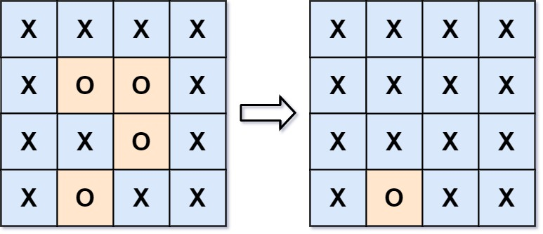

130. 被围绕的区域
反着来：从四条边的 O 出发 BFS/DFS 感染，染成 # 的是围不住的；再扫一遍，剩 O 翻 X、# 还原 O。
思路
- 正面判断「每块 O 是否被围」很费劲；从边界往里感染：凡能连到边的 O 都安全，剩下的必然被围。
- 三步：① 四条边的 O 入队并染
#；② BFS 向四方向感染，连着的 O 都变#；③ 全盘扫描：O→X（被围），#→O（还原）。 - 入队即染色，同一格不会重复进队；感染用
#暂存而不是直接翻X，最后一步才区分去留。
图解
最优解
1import java.util.*;2 3class Solution {4 public void solve(char[][] board) {5 int m = board.length, n = board[0].length;6 Deque<int[]> queue = new ArrayDeque<>();7 // 第一步：四条边上的 O 先入队，贴边的 O 不可能被围8 for (int i = 0; i < m; i++) {9 enq(board, queue, i, 0);10 enq(board, queue, i, n - 1);11 }12 for (int j = 1; j < n - 1; j++) {13 enq(board, queue, 0, j);14 enq(board, queue, m - 1, j);15 }16 // 第二步：感染。和边界 O 连着的全部改成 # 暂存，它们都安全17 while (!queue.isEmpty()) {18 int[] cur = queue.poll();19 enq(board, queue, cur[0] + 1, cur[1]);20 enq(board, queue, cur[0] - 1, cur[1]);21 enq(board, queue, cur[0], cur[1] + 1);22 enq(board, queue, cur[0], cur[1] - 1);23 }24 // 第三步：还剩下的 O 都是被围的，翻成 X；# 还原成 O25 for (int i = 0; i < m; i++) {26 for (int j = 0; j < n; j++) {27 if (board[i][j] == 'O') board[i][j] = 'X';28 else if (board[i][j] == '#') board[i][j] = 'O';29 }30 }31 }32 33 // (i, j) 在界内且还是 O：染成 # 再入队（入队即染色，不会重复进队）34 private void enq(char[][] b, Deque<int[]> queue, int i, int j) {35 if (i < 0 || i >= b.length || j < 0 || j >= b[0].length || b[i][j] != 'O') return;36 b[i][j] = '#';37 queue.add(new int[]{i, j});38 }39}题目
给你一个 m x n 的矩阵 board ，由若干字符 'X' 和 'O' 组成，捕获 所有 被围绕的区域：
- 连接：一个单元格与水平或垂直方向上相邻的单元格连接。
- 区域：连接所有
'O'的单元格来形成一个区域。 - 围绕：如果一个区域中的所有
'O'单元格都不在棋盘的边缘，则该区域被包围。这样的区域 完全 被'X'单元格包围。
通过 原地 将输入矩阵中的所有 'O' 替换为 'X' 来 捕获被围绕的区域。你不需要返回任何值。
示例 1：
输入：board = [['X','X','X','X'],['X','O','O','X'],['X','X','O','X'],['X','O','X','X']]
输出：[['X','X','X','X'],['X','X','X','X'],['X','X','X','X'],['X','O','X','X']]
解释：

在上图中，底部的区域没有被捕获，因为它在 board 的边缘并且不能被围绕。
示例 2：
输入：board = [['X']]
输出：[['X']]
提示：
m == board.lengthn == board[i].length1 <= m, n <= 200board[i][j]为'X'或'O'
题面取自力扣当前版本。
数据快照 2026-11-04。题面版权归力扣所有，本站点仅供本人学习使用，请勿对外发布。